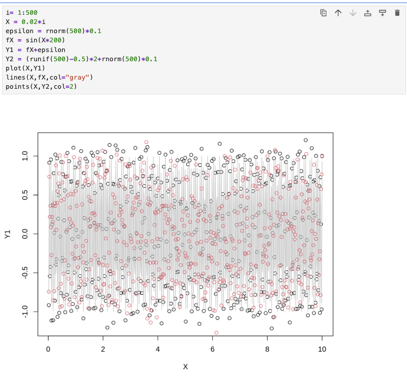
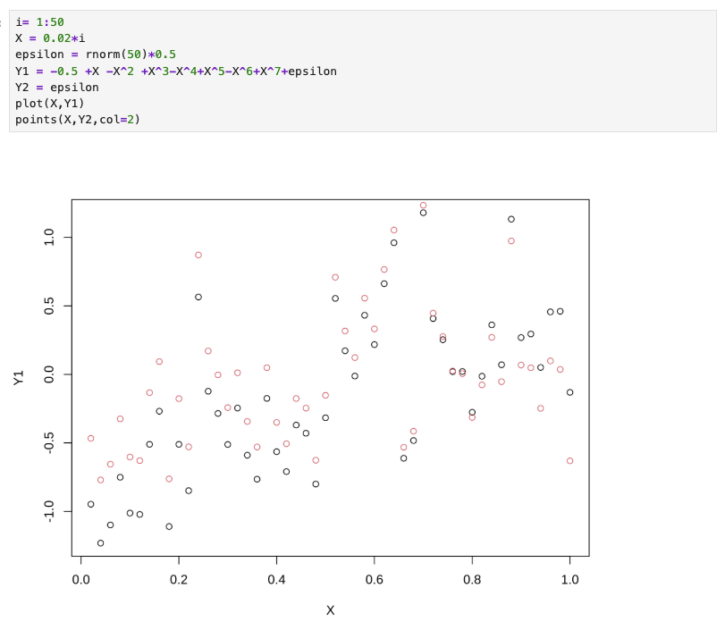
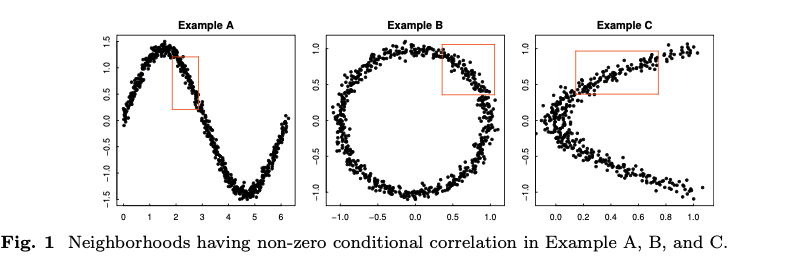
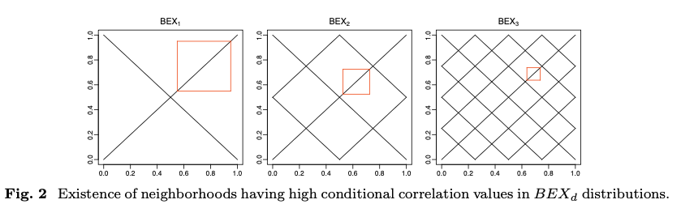
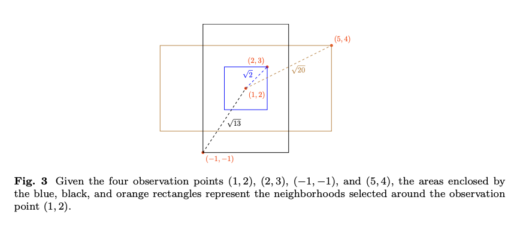
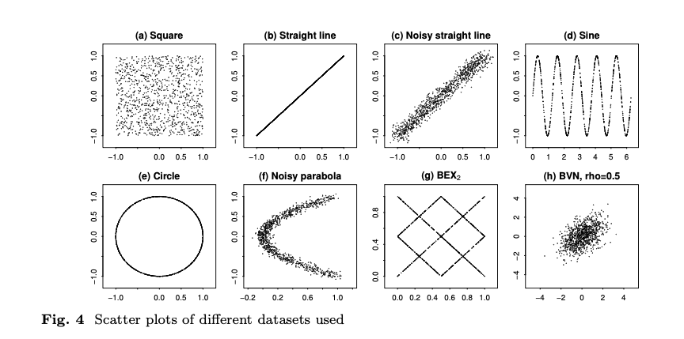
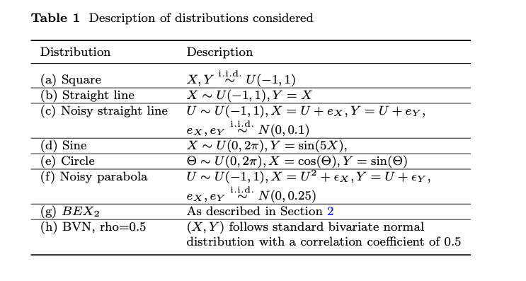
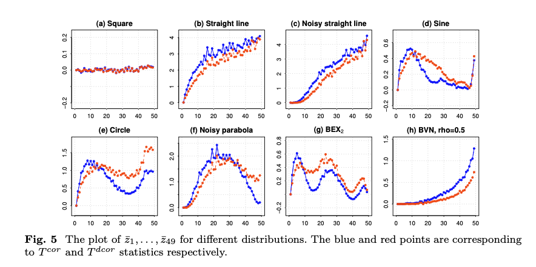
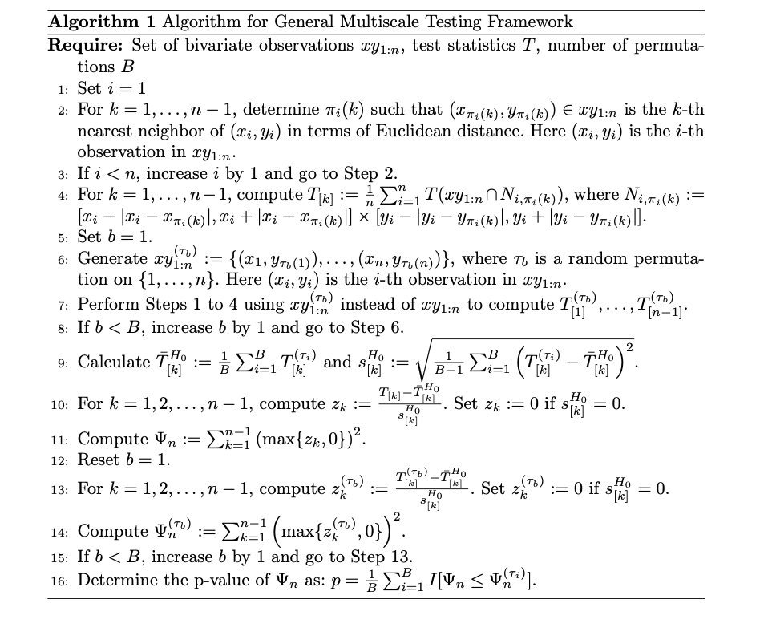

리비전 ▷ A Novel Multiscale Approach to Independence Testing
리뷰어 1에 대한 답변
이 논문은 지역 독립 통계의 다중 스케일 집계와 \(\varphi\) 기반 변형을 제시하며, \(O(n^2 \log n)\) 복잡도를 주장한다. 시뮬레이션 패널은 함수적 종속 설정에서 강한 검정을 시사한다. 동시에, 참신성, 이론, 계산, 그리고 실증적 설계의 여러 측면이 현재 초안에서 여전히 불분명하다.
답변:
저희는 원고를 꼼꼼히 읽고 통찰력 있는 의견과 제안을 제공해 주신 리뷰어께 진심으로 감사드립니다. 저희는 원고를 수정하였고, 제기된 모든 사항을 다루기 위해 보충 문서를 포함하였습니다.
• 문헌 범위와 참신성:
★ 지역 또는 다중 스케일 의존 측정에 관한 최근 연구(예: Shi 2021; Cao & Bickel 2020; Bickel 2022)가 인용되지 않았다. 저자들은 제안된 통계량이 이러한 접근법들과 개념적 또는 실질적으로 어떻게 다른지 설명할 수 있는가?
★ 마찬가지로, 다중 스케일 그래프 상관(MGC)과 최대 의존 계수(MDC)는 유사한 정신을 공유하는 듯하다. \(\Psi_n\)은 이러한 아이디어를 넘어서는 어떤 진전을 이루는가?
답변:
리뷰어께서 초기 원고에 인용되지 않았던 몇몇 관련 논문들을 지적해 주셔서 감사드린다. 이러한 참고 문헌들은 수정된 원고의 서론 부분에 포함되었다. 리뷰어가 언급한 “최대 의존 계수(MDC)”에 대해서는 적절한 참고 문헌을 찾으려 시도했으나 그러지 못하였다. 리뷰어께서 이 참고 문헌에 대한 추가적인 세부 사항이나 구체적인 인용을 제공해 주신다면 감사드리겠다.
리뷰어의 제안에 따라, 서론의 마지막 단락 직전에 새로운 단락을 추가하였다. 이 단락에서는 우리의 방법이 HHG 방법과 어떻게 다른지 논의하였다. HHG 방법은 우리의 방법과 가장 유사하다고 생각된다. 그러나 우리는 다른 방법들과 직접적인 비교를 수행하지는 않았다. 차이점은 충분히 크고 명확하기 때문에 쉽게 드러난다고 판단한다.
• 보조정리 1 (부록 A):
★ 보조정리는 \(T_{i,j}\)가 모든 \(j \neq i\)에 대해 \(O(n \log n)\) 시간 안에 계산될 수 있다고 주장한다. 그러나 몇몇 인덱스 범위(예: “trail count” 정의 바로 아래의 내부 합산)는 불일치해 보이며, 증명에서는 이를 명시적으로 언급하지 않고 네 번의 별도 펜윅-트리(Fenwick-tree) 과정을 스케치하고 있다. 저자들은 완전하고 인덱스가 정리된 증명을 제공할 수 있는가?
★ 논거는 \(x\) 또는 \(y\) 좌표에서 “동점 없음(no ties)”에 의존한다. 실제 데이터에 중복 값이 많은 경우 이 알고리즘은 얼마나 견고한가?
★ 동일한 \(O(n^2 \log n)\) 상한이 네 사분면의 개수를 모두 반복해서 계산하는 경우에도 여전히 유지되는가?
답변:
리뷰어께서 “trail count” 정의가 일관되지 않았음을 지적하신 데에 동의한다. 수정된 원고에서는 \(s_1, \ldots, s_m\)이 서로 다른 실수임을 명시적으로 기술하여 이를 바로잡았다.
우리는 보조정리의 증명을 인덱스가 정리된(index-clean) 형태로 다시 작성하여 가독성을 높였다. 또한 이 절차가 네 개의 사분면 전체에서 반복되는 방식을 명확히 하였고, 전체 계산 복잡도가 여전히 \(O(n^2 \log n)\)임을 보장하였다.
동점이 존재하는 실제 데이터셋에서 \(\Psi^{\varphi}_n\)의 빠른 구현 성능을 평가하기 위해, 이미 원고에 인용된 Galton Pea 데이터셋을 사용하였다. 원고에서는 동점을 처리하기 위해 느린 구현을 사용하였으나, 보충자료의 표 5에서는 빠른 구현과 느린 구현 간의 경험적 검정력 비교를 제시하였다. 예상대로, 빠른 구현은 동점을 적절히 처리할 수 없으므로 검정력이 감소하는 것으로 나타났다.
• 복잡도와 실제 관찰된 비용:
★ 원고에서는 \(\Psi^{\varphi}_n\)의 상관 기반 버전에 대해 \(O(n^2 \log n)\), 거리 상관 버전에 대해 \(O(n^3)\), 그리고 거리-상관 테스트 버전에 대해 \(O(n^3 \log n)\)을 인용한다. 공개된 PAIT 패키지에서 \(n = 1000, 10000, 100000\)일 때 실제 실행 시간(wall-clock time)을 측정했는가?
★ 검정이 \(B = 1000\) 번의 순열(permutation)에 의존하므로, 실제 실행 시간은 알고리즘 차수(order)가 제시하는 것보다 훨씬 클 수 있다. 실험적 실행 시간표는 독자들이 실행 가능성을 판단하는 데 도움이 될 것이다.
답변:
리뷰어의 제안에 따라, 우리는 표본 크기 \(n\)과 순열 횟수 \(B\)가 달라질 때 제안된 방법의 실행 시간을 비교하였다. 세부 결과는 보충자료의 표 1–4에 제시하였다. 더 큰 표본 크기에서는 실행 시간이 지나치게 길기 때문에, 결과를 \(100 \leq n \leq 1000\)으로 제한하였다. 본 실험에서는 높은 정밀성을 확보하기 위해 \(B = 1000\)을 사용했지만, 실제 목적에서는 \(B = 100\)만으로도 충분히 정확한 결과를 제공하는 것을 확인하였다. 따라서 실행 시간 비교에서는 \(B = 100\)을 사용하였다. \(\Psi^{\{dcor\}}_n\)은 실행 시간이 지나치게 길어 이번 연구에 포함하지 못했다.
제안된 검정법은 매우 큰 표본 크기에서는 계산 비용 때문에 실용적이지 않을 수 있으나, 작은 표본 크기에서도 복잡한 의존 구조를 탐지하는 데 매우 강력하여 기존의 많은 방법이 실패할 수 있는 상황에서도 잘 작동한다.
• 점근 이론:
★ \(H_0\) 하에서 순열(validity) 이외에, \(\Psi\)는 식별 가능한 대립가설 집합에 대해 일관성을 가지는가?
★ Cao & Bickel이 제시한 임계값에 대응하는, “지역 근방(local neighborhood)” 모형에서 신호 대 잡음의 경계가 탐지 가능한가?
답변:
우리는 본 논문에서 어떠한 이론적 결과도 제시하지 못했음을 인정한다. 제안된 방법의 구조가 매우 복잡하기 때문에 엄밀한 이론적 결과를 도출하기가 어렵다고 판단하였다. 그러나 수정된 원고에서는 “적용 가능성과 한계(Applicability and limitations)”라는 새로운 절을 추가하여, 두 가지 추측(conjectures)을 제시하고 우리의 방법이 실패하는 것으로 관찰된 특정 상황들을 논의하였다.
• 합성 실험 설계:
★ 모든 시뮬레이션 주변분포(marginals)는 가벼운 꼬리(light-tailed)이고 연속적이다. 무거운 꼬리(heavy-tailed) 및/또는 고도로 비대칭(gamma/beta) 분포, 혹은 이산형 주변분포에서는 방법이 어떻게 작동하는가?
★ 몇 가지 예시들(예: BEX, Lissajous, Rose 곡선)은 시각적으로 두드러지지만, 국소성(locality)에 기반한 검정에 유리하도록 설계된 듯 보인다. 만약 의존성이 희석되거나 이분산적 잡음(heteroskedastic noise)에 의해 가려진다면 어떻게 되는가?
답변:
우리는 이전 원고에서 시뮬레이션 주변분포가 모두 가벼운 꼬리와 연속적이었음을 리뷰어의 지적에 동의한다. 이에 따라, 리뷰어의 제안에 응답하여 Gamma(1,30), Beta(100,1), \(t_3\), \(t_4\), 그리고 Binomial(3,0.5) 분포를 사용하여 시뮬레이션을 다시 수행하였다. 우리는 “Parabola λ”, “Circle λ”, “Sine λ”, “Lemniscate λ” 분포를 선택하여 명시적 및 암시적 함수적 관계를 모두 포함시키고 다양한 수준의 잡음을 고려하였다. Gamma(1,30)과 Beta(100,1)은 각각 양의, 음의 방향으로 매우 비대칭이며, \(t_3\)와 \(t_4\)는 무한한 첨도(kurtosis)를 가지며, Binomial(3,0.5)은 이산 분포이다. 비교 가능성을 보장하기 위해, 우리는 이러한 주변분포들의 분산을 원래 실험에서 사용된 값과 일치하도록 조정하였다. 그 결과(보충자료의 그림 2–6 참조)는 방법의 성능이 주변분포의 선택에 크게 영향을 받지 않음을 보여주었다.
이분산적 잡음을 포함한 추가 실험도 보충자료에 제시되어 있다. 데이터 생성은 표 7, 산점도는 그림 7, 경험적 검정력 곡선은 그림 8을 참조하라.
• 이산 데이터에 대한 적용 가능성:
★ 많은 실제 데이터셋(예: 카운트 자료, 리커트 척도)은 다수의 동점(ties)을 포함한다. 보조정리 1에서 사각형 개수가 심각한 동점 빈도를 가질 경우, 성능—혹은 타당성—은 어떻게 되는가?
답변:
리뷰어께서 지적한 대로 실제 데이터셋에는 종종 다수의 동점이 존재한다. 실제로 본 논문에서 사용한 Galton 완두콩 데이터셋에도 이러한 동점이 많이 포함되어 있다. 이를 처리하기 위해, 우리는 논문에서 \(\Psi^{\varphi}_n\)의 느린 구현(slower implementation)을 사용하였다. 그러나 보충자료에서는 빠른 구현(faster version)을 사용했을 경우 어떤 일이 일어나는지를 시연하였다. 예상대로, 동점의 존재는 검정력의 뚜렷한 감소로 이어졌다.
• 실제 데이터 시연:
★ 유일한 데이터 예시인 Galton의 완두콩은 사실상 1차원이며, 이미 전역 검정(global tests)에 쉽게 적용될 수 있다. 표준 dCor 또는 HSIC이 실패하지만 \(\Psi_n\)이 의존성을 탐지하는 사례가 있는가? 예를 들어 영상, 유세포분석(flow-cytometry), 금융 등 다른 예시가 유익할 수 있다.
답변:
리뷰어의 제안에 따라, 우리는 추가적인 실제 데이터셋—CMU 데이터셋 라이브러리에서 제공되는 “Pollution” 데이터셋(https://lib.stat.cmu.edu/datasets/pollution)—을 분석하였다. 구체적으로, 우리는 두 변수 “NOX”(상대적 이산화질소 오염 잠재력)와 “MORT”(10만 명당 연령 보정 사망률) 간의 연관성을 조사하였다. 산점도는 보충자료의 그림 1에 제시되어 있다.
각 표본 크기에 대해, 전체 데이터셋에서 단순 임의 복원 없는 추출(SRSWOR)을 통해 표본을 추출한 후 모든 검정 방법을 적용하였다. 이 절차는 각 방법의 경험적 검정력을 추정하기 위해 1000번 독립적으로 반복되었다. 순열 횟수는 1000으로 고정하고 유의수준은 5%로 설정하였다. 경험적 검정력 결과는 보충자료의 표 6에 제시되어 있다.
결과적으로, 제안된 방법들—특히 \(\Psi^{\varphi}_n\)과 \(\Psi^{\{cor\}}_n\)—이 HSIC과 dCor보다 우수함을 확인할 수 있었다.
리뷰어 2에 대한 답변
이 논문은 두 확률 변수 간의 독립성을 검정하기 위한 새로운 다중 스케일(multiscale) 프레임워크를 제안한다. 저자들은 흥미로운 접근법을 제시하고, BEX 분포 및 원형 관계와 같은 복잡한 의존 구조에서 기존 방법들보다 우수한 성능을 보여준다. 집계 통계량 \(\Psi_n = \sum (\max \{ z_k, 0 \})^2\)의 설계는 허위 양성(spurious false positives)에 대해 강건한 합리적 접근으로 보인다. 이는 명확한 실질적 가치를 가지는 기여라 할 수 있다. 그러나 방법론이 달성할 수 있는 이론적 보장과 논문이 주장하는 바 사이에는 근본적인 간극이 존재하며, 이는 현재 형태로는 게재 승인을 추천하기 어렵게 한다.
답변:
저희는 원고를 세심히 읽고 통찰력 있는 의견과 제안을 주신 리뷰어께 진심으로 감사드린다. 저희는 원고를 수정하였고, 제기된 모든 사항을 다루기 위해 보충 문서를 포함하였다.
- 이론적 정당화의 한계 명확화
제안된 방법은 \(Y = f(X)\) 형태의 의존성을, \(f\)가 연속적인 경우 일반적으로 탐지할 수 있다는 인상을 준다. 이러한 인식은 제시된 예시들과 다중 스케일 접근법이 구성된 방식 모두에 의해 뒷받침된다.
그러나 연속성만으로는 제안된 틀에서 신뢰할 수 있는 탐지를 보장하는 충분조건이 아니다. 다음 반례를 고려하라: 제곱파(square wave)의 푸리에 급수 표현,
\[ Y = \sum_{n = 1, 3, 5, \ldots} \frac{\sin(2 \pi n X)}{n} \]
이 함수는 병리적이거나 인위적인 것이 아니며, 신호 처리, 제어 시스템, 음향학에서 표준적으로 사용되는 구성이다. 이는 연속적이며, \(Y\)는 \(X\)의 결정론적 함수이다. 그러나 개별 고조파 항 \(\sin(2 \pi n X)\)는 \(X\)와 평균적으로 상관관계가 0이며, 무한히 많은 중첩된 고조파 성분들 때문에 다중 스케일 분석의 각 지역 근방(local neighborhood)은 다른 스케일로부터의 지속적인 간섭을 받는다. 그 결과, 함수가 강한 결정론적 의존성을 보임에도 불구하고, 신호는 어떤 국소 스케일에서 거의 평평하거나 구조가 없는 것처럼 보일 수 있다—겉보기에는 “거의 상수(almost constant)”처럼 보이나 실제로는 전혀 상수가 아니다.
여기서 문제는 이 특정한 구성 자체가 영리하다는 것이 아니라, 제안된 방법의 이론적 설명에 존재하는 공백을 드러낸다는 점이다. 저자들이 Zhang (2019)의 정리 2.2—즉, 어떤 독립성 검정도 균일하게 일관적일 수 없음을 보인 결과—를 인용하였지만, 이는 유한 표본이 부과하는 통계적 한계만을 다룰 뿐이다. 이는 제안된 방법이 무한한 데이터가 있더라도 특정 연속적 의존성을 구조적으로 탐지하지 못하는지 여부는 설명하지 않는다.
이 구분은 중요하다. 표본 크기로 인한 이론적 한계와 근본적인 구조적 맹점은 다르다. 이러한 극단 사례들—특히 실질적으로 중요한 의미를 가지면서도 기만적인 함수 형태를 포함하는 경우—에 대해 더 세심하고 투명한 논의가 이루어진다면, 논문의 이론적 신뢰성이 크게 향상될 것이다.
답변:
우리는 이전 원고가 \(Y = f(X)\) 형태(여기서 \(f\)는 연속 함수)의 의존성을 신뢰성 있게 탐지할 수 있다는 인상을 줄 수 있음을 인정한다. 그러나 이를 뒷받침할 이론적 보장은 없었다. 이 문제를 고려하여, 우리는 제목, 초록, 주요 절(서론, 2절, 결론 및 논의 절)을 수정하여 제안된 방법이 보편적으로 함수적 의존성을 탐지하지 않음을 명확히 하고, 다중 스케일적 특성을 더 잘 강조하였다.
리뷰어가 언급한 함수는
\[ f(x) = \sum_{k=1}^{\infty} \frac{\sin(2\pi(2k-1)x)}{2k-1} \]
로, 세 가지 뚜렷한 값을 가진다: \(-\pi/4, 0, \pi/4\) [참고: https://en.wikipedia.org/wiki/Square_wave_(waveform)]. 본질적으로,
\[ f(x) = (\pi/4) \left[ I(\sin(2\pi x) > 0) - I(\sin(2\pi x) < 0) \right]. \]
따라서 \(f(X)\)는 \(X\)의 분포와 무관하게 이산적이다. 특히, \(X \sim U(0,1)\)이고 \(Y = f(X)\)일 때, 수치적 시뮬레이션 결과 \(\Psi_n^{\varphi}\)는 의존성을 탐지하지 못했으나, \(\Psi_n^{cor}\)와 \(\Psi_n^{dcor}\)는 표본 크기 15만으로도 완전한 검정력을 달성하였다. 이는 놀라운 결과가 아니며, \(T^{\varphi}_{i,j} = 0\) (모든 \(i \neq j\))이 되어 \(\Psi_n^{\varphi}\)의 실패를 설명한다. 반대로, \((x_i, y_i) \in (0, 1/2) \times \{\pi/4\}\), \((x_j, y_j) \in (1/2, 1) \times \{-\pi/4\}\)의 경우, \(T^{cor}_{i,j}\) 및 \(T^{dcor}_{i,j}\) 값은 양수이므로 \(\Psi_n^{cor}\)와 \(\Psi_n^{dcor}\)가 효과적임을 설명한다.
수정된 원고에서는 “Applicability and limitations” 절에, 주변분포 중 하나가 비연속적인 경우(이 예시처럼) \(\Psi_n^{\varphi}\)와 \(\Psi_n^{cor}\)가 실패할 수 있음을 명시하였다.
–> 나의 의미를 잘못내가 표현했었다. 나는 square wave를 의미한게 아니었음. \(f(x,n) = \sum_{k=1}^{n} \frac{\sin(2\pi(2k-1)x)}{2k-1}\) 즉 \(f(x,n) = \sum_{k=1}^{n} \frac{\sin(2\pi(2k-1)x)}{2k-1}\) \(\lim_{n\to \infty}f(x,n)\) 를 의미한게 아님. 애초에 함수 \(\lim_{n\to \infty}f(x,n)\)는 연속이 아님.. (함수 \(f(x,n)\)은 모든 \(n\in \mathbb{N}\)에서연속이지만, 그 극한이 연속은아님.) 내가 의미한 것은 충분히 큰 \(n\) 에서의 \(f(x,n)\)임.
아무튼, 의미를 좀 더 확실하게 하게 위해서 아래의 함수를 고려하였다. 이함수는


introduction to nonparametric regression 의 1.5절의 함수를 참고하였다. Y1은 p3 equation2를 만족한다.
제시된 두 함수에서 제안된 프레임워크가 동작하지 않을것이라 본다. @book{takezawa2005introduction, title={Introduction to nonparametric regression}, author={Takezawa, Kunio}, year={2005}, publisher={John Wiley & Sons} }
- 이론적 보장의 범위와 조건의 불명확성
저자들은 제안된 방법이 언제, 어떤 조건에서 성공적으로 의존성을 탐지할 수 있는지에 대한 이론적 특성을 제시하지 않았다. 실험적 결과가 다양한 경우에서 성공을 보여주고는 있으나, 근본적인 질문들이 여전히 남아 있다:
- 어떤 유형의 의존성은 탐지 가능한가, 그리고 어떤 유형은 본질적으로 탐지하기 어려운가?
- 스케일 선택 및 집계 방식은 탐지 가능성에 어떻게 영향을 미치는가?
- 이론적 한계와 적용 가능성의 범위는 무엇인가?
- 프랙탈(fractal) 또는 무한 복잡성 구조에서 성능은 어떻게 작동하는가?
답변:
리뷰어의 제안에 따라, 수정된 원고에서는 “적용 가능성과 한계(Applicability and limitations)”라는 새로운 절을 추가하였다. 여기서 두 가지 추측을 제시하였다:
(i) \(X\)와 \(Y\)가 유한 분산을 가진 연속 확률 변수일 때, \(\Psi_n^{\varphi}\)와 \(\Psi_n^{cor}\) 검정은 독립성 검정에 대해 일관성을 가진다.
(ii) \(\Psi_n^{dcor}\)는 양쪽 주변분포가 유한 분산을 가지는 한 일관적이다.
그러나 만약 어느 한 쪽 주변분포가 유한 분산을 가지지 않는다면, \(\text{Cor}(X,Y)\)나 \(\text{dCor}(X,Y)\)가 존재하지 않을 수 있으며, 이는 \(\Psi_n^{cor}\)와 \(\Psi_n^{dcor}\)의 실패로 이어질 수 있다. 유사하게, 한쪽 주변분포가 연속적이지 않은 경우 \(\Psi_n^{\varphi}\)와 \(\Psi_n^{cor}\) 검정이 실패할 수 있다. 같은 절에서 우리는 이러한 예시들을 제시하였으며, 잠재적 해결책으로 지터링(jittering)을 제안하였다.
집계 방식(aggregation scheme)은 성능에 영향을 준다. 우리는 \(Z\)-점수 대신 피셔(Fisher) 방법으로 \(p\)-값을 집계하는 실험을 진행했으나, 검정력이 약해 보고하지 않았다. 결론 및 논의 절에서는 이웃 선택(neighborhood selection)이 검정력과 계산 복잡성 모두에 어떻게 영향을 미치는지도 논의하였다.
프랙탈(fractal)이나 무한 복잡 구조에서의 동작은 이론적 분석을 필요로 한다고 믿는다. 아직 이 방향의 결과를 도출하지는 못했지만, 리뷰어가 제안한 특정 프랙탈 예시에 대한 수치 실험을 진행할 의향이 있다.
- 순열 기반 추론의 논리적 한계
근본적으로, 이 방법은 다음에 의존한다:
“만약 어떤 스케일에서 순열 결과가 원본과 다르다면 → 의존성이 존재한다.”
그러나 그 역은 성립하지 않는다:
“모든 스케일에서 순열 결과가 유사하다면 → 독립이다.”
이는 이론적으로 보장되지 않는다. 모든 개별 스케일에서는 평균적으로 독립처럼 보이지만, 전체적으로는 강한 의존성을 유지하는 구조가 존재할 수 있다.
답변:
우리는 이 한계를 인정한다. 앞서 언급한 바와 같이, 원고의 “적용 가능성과 한계” 절에서 \(\Psi_n^{\varphi}\)와 \(\Psi_n^{cor}\)가 실패하는 예시를 포함하였다. 또한, 방법이 성공하는 상황에 대한 추측도 제시하였다.
- 포지셔닝 문제: 완전성 대 실용성
이 논문은 독립성 검정에 대한 포괄적 해결책으로 제시되었으나, 실제로는 대부분의 실용적 사례에서 효과적인 탐지 도구로 보는 것이 더 정확하다. 이러한 불일치는 독자들에게 방법의 능력에 대해 오해를 줄 수 있다.
답변:
리뷰어의 지적에 감사드린다. 우리는 제목과 초록을 수정하고, 1장, 2장, 결론 부분을 다시 작성하여 (i) 제안된 방법이 보편적으로 함수적 의존성을 탐지한다는 인상을 피하고, (ii) 이론적 보장보다는 다중 스케일적 특성과 경험적 효과를 강조하도록 하였다.
- 방법론적 선택에 대한 불충분한 정당화
집계 통계량은 직관적으로 합리적이지만, 그 최적성이나 대안 대비 장점에 대한 이론적 분석이 부족하다. 이는 이웃 정의(neighborhood definitions)와 스케일 선택(scale selection)과 같은 선택에도 동일하게 적용된다.
긍정적인 측면:
- 복잡한 구조(BEX, 원형, 잡음이 포함된 함수)에서 강력한 성능
- 허위 양성을 억제하는 강건한 집계 방식
- 포괄적이고 공정한 실험 연구
- 공개된 R 패키지와 시각화 도구 제공
- 독립성 검정을 위한 새롭고 유용한 접근법
권고사항:
- 한계 인정 및 재포지셔닝:
- “보편적 검정(universal test)”에서 “대부분의 사례에 효과적인 도구”로 전환
- 이론적 맹점(예: 프랙탈 함수)을 명시적으로 언급
- 실용적 가이드라인 제공:
- 방법을 언제 사용할지에 대한 경험적 지침
- 다른 방법들과의 관계를 명확히 설명
- 잘 탐지되는 의존성 유형을 구체화
- 경험적 성격 강조:
- 이론적 주장보다 경험적 유용성을 강조
- “발견적(heuristic)이지만 효과적인” 방법으로 제시
- 설계 선택을 경험적으로 정당화
답변:
격려해 주시고 심도 있는 제안을 해주신 리뷰어께 감사드린다. 우리는 제목, 초록, 원고의 여러 절을 수정하여 이론적 한계를 인정하고, 추측(conjectures)을 제시하며, 실패 사례를 강조하고, 지터링(jittering)을 해결책으로 제안하였으며, HHG 검정과의 관계를 설명하였다. 1장과 2장은 우리의 근거를 명확히 하고 방법론적 선택의 투명성을 개선하기 위해 상당 부분 다시 작성되었다.
초록
이 논문은 두 확률 변수 간의 독립성 검정 문제를 다룬다. 우리는 데이터셋 내에서 다양한 크기의 이웃을 탐색하고 그 결과를 집계하는 다중 스케일(multiscale) 접근법을 채택하였다. 이를 위해 기존의 어떤 독립성 검정에도 적용 가능한 일반적 다중 스케일 프레임워크를 소개한다. 이 틀을 기반으로 새로운 검정을 제안하고, 계산 효율적인 알고리즘을 함께 제시한다.
제안된 방법의 성능은 시뮬레이션 데이터와 실제 데이터 모두에서 기존 검정들과의 다중 비교를 통해 평가되었다. 그 결과, 제안된 검정은 변수들 간의 명시적 또는 암묵적 함수적 관계로 인한 연관성을 탐지하는 데 특히 효과적임이 드러났다. 또한 데이터셋 내 의존성의 국소화를 탐색하기 위한 시각화 방법도 제안하였다.
1 서론
독립성 검정은 통계 분석에서 중요한 역할을 한다. 이는 변수들 간의 관계를 규명하고, 모형을 검증하며, 많은 수의 변수 풀에서 관련 있는 특징을 선택하고, 인과적 방향을 확립하는 등 다양한 응용에 사용된다. 이러한 검정은 경제학, 생물학, 사회과학, 임상시험 등 분야에서 특히 중요하다.
독립성 검정의 수학적 공식화는 다음과 같다. 분포 함수 \(F_X\), \(F_Y\)를 가진 두 확률 변수 \(X\), \(Y\)를 고려하자. \(F\)를 이들의 결합 분포 함수라고 하자. 목표는 \(n\)개의 독립 동일분포(i.i.d.) 표본 \((x_1, y_1), (x_2, y_2), \ldots, (x_n, y_n)\)이 \(F\)로부터 주어졌을 때, 귀무가설 \(H_0\)와 대립가설 \(H_1\)을 검정하는 것이다.
\[ \begin{cases} H_0 : F = F_X F_Y \\ H_1 : F \neq F_X F_Y \end{cases} \tag{1} \]
이 주제에 대한 상당한 연구가 이미 진행되었으며, 여전히 활발히 탐구되고 있다. 피어슨 상관계수는 아마도 선형 의존성을 정량화하는 가장 잘 알려진 고전적 측정치일 것이다. 스피어만 순위 상관계수(Spearman 1904)와 켄달 일치-불일치 통계량(Kendall 1938)은 단조적 연관을 측정하는 데 사용된다. Hoeffding (1948)은 결합 분포 함수와 주변분포 곱 사이의 \(L_2\) 거리 기반 측정치를 제안하였다.
Székely et al. (2007)은 에너지 거리를 기반으로 한 거리상관(dCor)을 도입하였으며, Gretton et al. (2007)은 커널 방법을 활용해 Hilbert-Schmidt 독립성 기준(HSIC)을 개발하였다. Reshef et al. (2011)은 최대 정보 계수(MIC)를 제안했는데, 이는 정보이론적 측도로서 한 변수가 다른 변수의 함수일 때 최대값에 도달한다. Heller et al. (2013)은 문제를 여러 \(2 \times 2\) 독립성 검정으로 분해하고 결과를 집계하는 강력한 검정을 소개하였다.
Zhang (2019)은 전체 변동 거리(total variation distance)와 관련하여 균일하게 일관적인 검정을 제안하였다. Roy et al. (2020)은 콥라와 체커보드 접근법을 이용해 단조 변환 불변 의존성 검정을 제안하였다. Shen et al. (2020)은 이산 상관 기반 다중 스케일 접근법을 제안하였다. Chatterjee (2021)는 단순한 형태의 측도와 점근적 정규분포를 가진 비대칭 측도를 도입하였으며, 함수적 관계가 존재할 때만 최대값을 달성한다.
Cao and Bickel (2020)은 계수가 최대값에 도달하는 함수류에 Chatterjee 접근법을 제한하였다. 그러나 Shi et al. (2022)와 Bickel (2022)은 Chatterjee 방법이 국소적 대립가설에서 낮은 검정력을 보임을 입증하였다. 이를 해결하기 위해, Bickel (2022)은 개선된 검정력을 보여주며 함수적 관계를 탐지하는 데 효과적인 새로운 독립성 측정 프레임워크를 제안하였다.
독립성 검정은 저마다 고유한 강점과 한계를 가진다. Zhang (2019)의 정리 2.2에 따르면, 어떤 독립성 검정도 균일한 일관성을 달성할 수 없다. 이는 주어진 표본 크기에 대해 어떤 검정의 검정력이 모든 대립가설에 걸쳐 항상 명목 수준을 초과할 수 없음을 의미한다. 따라서 특정 상황에 적절한 검정을 선택하는 것이 중요하다.
예를 들어, 상관계수는 두 개의 결합 정규분포 확률 변수 간의 의존성을 탐지하는 데 특히 강력하며, 선형 관계를 식별하는 데 매우 효과적이다.
마찬가지로, 스피어만 순위 상관계수는 단조적 관계를 탐지하는 데 특히 적합하다.
우리는 이후 절들에서 다양한 수치 실험을 통해, 제안된 검정이 두 확률변수가 명시적 또는 암묵적 함수적 관계를 가질 때 기존 검정보다 종종 우수함을 보였음을 확인하였다. 여기서 명시적 또는 암묵적 함수적 관계란, 다음 매개방정식을 따르는 확률 변수 \(X\)와 \(Y\)를 의미한다:
\[ \begin{cases} X = f(Z) + \epsilon_X \\ Y = g(Z) + \epsilon_Y \end{cases} \tag{2} \]
여기서 \(Z\)는 구간 \(I\) 위에서 정의된 연속 확률 변수이며, \(\epsilon_X\), \(\epsilon_Y\)는 \(Z\)와 독립인 잡음 성분이다. \(f\)와 \(g\)는 \(I\) 위의 연속 함수로, \(I\)를 유한 개의 부분구간으로 분할했을 때 각 부분구간에서 단조성을 가진다고 가정한다. 이 설정에는 \(X\)와 \(Y\)가 직접적으로 함수적으로 연결된 경우(예: \(Y = f(X) + \epsilon_Y\) 또는 \(X = g(Y) + \epsilon_X\))도 포함된다. 이는 \(f\)와 \(g\)에 대한 온건한 제약 조건하에서 성립한다.
Chatterjee (2021)의 방법과 달리, 우리의 접근은 \(X\)와 \(Y\)를 대칭적으로 다룬다.
우리의 접근은 각 관측점 주변에서 계산된 다수의 이웃(neighborhood) 기반 의존 계수를 집계하는 방식에 기반한다. 이웃 선택 과정은 Heller et al. (2013)에서의 \(2 \times 2\) 분할표 구성과 유사성을 가지지만, 우리의 방법은 조건부 상관(conditional correlations)을 활용한다는 점에서 근본적으로 다르다.
이 논문의 구성은 다음과 같다. 2절에서는 일반적인 다중 스케일 프레임워크를 소개하고 그 계산 복잡도를 살펴본다. 3절에서는 이 프레임워크를 적용하여 새로운 독립성 검정을 개발하고 그 계산 복잡도를 분석한다. 4절에서는 다양한 시뮬레이션 데이터셋에서 제안된 방법의 성능 비교를 제시한다. 5절에서는 이러한 분석을 실제 데이터셋으로 확장한다. 6절에서는 실제 데이터셋 내 의존성의 국소화를 탐구하기 위한 시각화 기법을 소개한다. 7절에서는 제안된 방법의 적용 가능성과 한계를 논의한다. 마지막으로, 논의와 연구 결과 요약으로 결론을 맺는다.
2 일반 다중 스케일 검정 프레임워크
이 절은 식 (2)에서 기술된 매개방정식을 만족하는 연속 종속 확률 변수 \(X\), \(Y\)의 몇 가지 예시로 시작한다. 우리는 세 가지 예시를 고려하며, 이를 예시 A, B, C라 한다.
예시 A:
\(X = \Theta + \epsilon_X\),
\(Y = \sin(\Theta) + \epsilon_Y\),
여기서 \(\Theta\), \(\epsilon_X\), \(\epsilon_Y\)는 서로 독립이며, \(\Theta \sim U(0, 2\pi)\), \(\epsilon_X, \epsilon_Y \sim N(0, (1/20)^2)\).예시 B:
\(X = \cos(\Theta) + \epsilon_X\),
\(Y = \sin(\Theta) + \epsilon_Y\).예시 C:
\(Y = U + \epsilon_Y\),
\(X = U^2 + \epsilon_X\),
여기서 \(U \sim U(-1, 1)\)이고 \(U\)는 \(\epsilon_X\), \(\epsilon_Y\)와 독립이다.
이 예시들의 산점도는 그림 1에 제시되어 있다. 모든 예시의 공통적인 특징은 지지점(support points) 주변의 특정 이웃(neighborhood) 내에서 \(X\)와 \(Y\) 사이의 조건부 상관이 0이 아니라는 점이다.
구체적으로, 분포의 지지집합에 속하는 점 \((x_0, y_0)\)와 \((x', y')\)가 존재하여,
\[ \text{Cor}(X, Y \mid (X, Y) \in N(x, y; |x' - x_0|, |y' - y_0|)) \neq 0 \]
가 성립한다. 여기서 \(N(x, y; \epsilon_1, \epsilon_2)\)는 \((x, y)\)의 \(\epsilon_1, \epsilon_2\)-이웃을 의미하며, 이는
\[ [x - \epsilon_1, x + \epsilon_1] \times [y - \epsilon_2, y + \epsilon_2] \]
로 정의된다. 그림 1에서 빨간 사각형은 이러한 조건부 상관이 0이 아닌 이웃의 사례들을 강조한 것이다.

다음 예시로, Zhang (2019)에서 처음 제안된 \(BEX_d\) 분포를 고려한다. 이는 다음과 같이 정의된 평행 및 교차하는 선들의 집합 위에서의 균등 분포이다:
\[ \sum_{i=1}^{2^d - 1} \sum_{j=1}^{2^d - 1} (|x - c_i| - |y - c_j|) I[|x - c_i| \leq 2^{-d}, |y - c_j| \leq 2^{-d}] = 0, \]
여기서 \(c_i = (2i - 1)/2^d\). 그림 2는 \(d = 1, 2, 3\)일 때의 \(BEX_d\) 분포를 보여준다.
\((X, Y)\)가 \(BEX_d\) 분포를 따른다면, 주변분포 \(X\)와 \(Y\)는 서로 종속적이지만 둘 다 \([0,1]\)에서의 연속 균등 분포를 따른다. 또한 \(X\)와 \(Y\)는 식 (2)를 만족함을 보일 수 있다. \(BEX_d\) 분포에서는 \(\text{Cor}(X, Y) = 0\)이지만, 지지점(support points) 주변의 특정 이웃에서는 조건부 상관이 매우 크게 나타난다. 그림 2의 빨간 사각형은 이러한 조건부 상관이 큰 이웃들을 강조한 것이다.

그림 2: \(BEX_d\) 분포에서 조건부 상관이 큰 이웃들의 존재. \(BEX_1\), \(BEX_2\), \(BEX_3\) 분포에서 높은 조건부 상관 값을 가진 영역이 나타난다.사실, \(X\)와 \(Y\)가 독립임은 이들이 모든 ‘분위 집합(quantile sets)’—즉 직사각형 집합 (Jaworski et al. 2024, 정리 3)—에서 조건부 비상관일 때 그리고 그때에 한한다. 그러나 모든 가능한 분위 집합을 확인하는 것은 계산적으로 매우 부담이 크다. 게다가 유한 표본에서는 일부 분위 집합이 공집합일 수도 있다.
따라서 우리는 다른 전략을 채택한다: 각 관측치를 중심으로 한 이웃(neighborhood)에 집중하는 것이다. 이러한 이웃의 크기는 다른 관측치들의 상대적 위치에 따라 결정된다. 이후 모든 이웃으로부터 의존성 정보를 추출하고 이를 집계한다. 이러한 아이디어를 바탕으로, 우리는 기존 독립성 검정을 강화하기 위한 다중 스케일 프레임워크를 이 절에서 제안한다.
\(n\)개의 독립 동일분포(i.i.d.) 표본 \(\mathbf{xy}_{1:n} = (x_1, y_1), \ldots, (x_n, y_n)\)이 주어졌다고 하자. 우리는 각 관측치를 중심으로 하는 이웃을 정의하고, 다른 관측치들과의 거리를 이용해 이웃의 크기를 결정한다.
주어진 표본 \(\mathbf{xy}_{1:n}\)과 이변량 분포 \(F\)에 대해, 우리는 \(i \neq j\)일 때 \(N(x_i, y_i; |x_j - x_i|, |y_j - y_i|)\) 형태의 모든 이웃을 고려한다. 따라서 총 \(n(n-1)\)개의 이웃이 존재한다. 표기 단순화를 위해 \(N(x_i, y_i; |x_j - x_i|, |y_j - y_i|)\)를 \(N_{i,j}\)로 나타낸다. 이 이웃 선택 방법은 두 가지 장점을 가진다: (i) \(N_{i,j}\)는 항상 최소 두 개의 점을 포함하여 상관 계산이 가능하며, (ii) 제안된 \(T^{\varphi}\) 검정 통계량의 효율적 계산을 가능하게 한다.
\(T\)를 두 확률 변수의 독립성을 검정하는 통계량이라 하자. \(T(\mathbf{xy}_{1:n})\)는 표본 \(\mathbf{xy}_{1:n}\)에서 계산된 \(T\)의 값을 의미한다. 여기서는 \(T(\mathbf{xy}_{1:n}) \geq 0\), 독립일 때 \(T(\mathbf{xy}_{1:n}) \to 0\) (확률수렴), 기각역이 \(\{T(\mathbf{xy}_{1:n}) > C_n\}\) (어떤 \(C_n > 0\)에 대해) 형태를 만족하는 통계량만 고려한다. 예를 들어, 피어슨 상관계수 자체는 \(T\)가 될 수 없으나 절댓값은 사용할 수 있다.
\(T_{i,j} := T(\mathbf{xy}_{1:n} \cap N_{i,j})\)로 정의한다. 즉, \(T_{i,j}\)는 \(N_{i,j}\)에 속하는 관측치들만을 사용해 계산된 \(T\)의 값이다. 만약 \(T\)가 정의되지 않는 경우(예: \(x_i = x_j\) 또는 \(y_i = y_j\)), \(T_{i,j} := 0\)으로 둔다.
가장 단순한 집계 방법은 모든 \(T_{i,j}\) 값을 합산하여 \(\sum_{1 \leq i \neq j \leq n} T_{i,j}\)를 얻는 것이다. 그러나 이러한 단순 합은 의존성이 국소화된 경우, 즉 \((i, j)\)쌍이 근접하지 않을 때 잡음(noise)으로 인해 유의한 신호가 희석될 수 있다. 이를 완화하기 위해, \(T_{i,j}\)를 \((x_i, y_i)\)와 \((x_j, y_j)\)의 근접성에 따라 \(n-1\)개의 그룹으로 나누어 집계한다. 이 그룹화 전략은 이후 절에서 자세히 설명한다.
각 관측치 \((x_i, y_i)\)에 대해, 나머지 관측치들을 \((x_i, y_i)\)로부터의 유클리드 거리 기준으로 정렬한다. 동점인 경우 무작위로 순서를 정한다. \((x_{\pi_i(1)}, y_{\pi_i(1)}), \ldots, (x_{\pi_i(n-1)}, y_{\pi_i(n-1)})\)는 \((x_i, y_i)\)로부터의 거리에 따라 오름차순으로 정렬된 관측치들이다. 따라서 \(N_{i,\pi_i(k)}\)는 \((x_i, y_i)\)의 \(k\)번째 최근접 이웃(nearest neighbor)을 꼭짓점으로 포함하는 이웃이다.
고정된 \(i\)에 대해, \(k\)가 증가할수록 \(N_{i,\pi_i(k)}\)의 대각선 길이가 증가함을 쉽게 알 수 있다. 우리는 \(k\)를 고정한 상태에서 \(i=1,\ldots,n\)에 대해, 표본 \(\mathbf{xy}_{1:n} \cap N_{i,\pi_i(k)}\)를 기반으로 한 검정 통계량 \(T\)의 값을 평균한다. 이를 \(T_{[k]}\)라 표기하며,
\[ T_{[k]} := n^{-1} \sum_{i=1}^n T(\mathbf{xy}_{1:n} \cap N_{i,\pi_i(k)}) = n^{-1} \sum_{i=1}^n T_{i,\pi_i(k)}. \]
\(T_{[k]}\) 값이 얼마나 극단적인지를 판단하기 위해, 주변분포가 독립일 때의 분포를 알아야 한다. 이는 리샘플링(resampling) 기법을 통해 추정할 수 있다. 이에 대한 세부 논의는 다음 절에서 다룬다.

주어진 표본 \(\mathbf{xy}_{1:n}\)으로부터 무작위 치환된 표본 \(\mathbf{xy}^{(\tau)}_{1:n}\)을 생성할 수 있다. 여기서 \(\tau(1), \ldots, \tau(n)\)은 \(1, \ldots, n\)의 임의 치환이며,
\[ \mathbf{xy}^{(\tau)}_{1:n} := \{(x_1, y_{\tau(1)}), \ldots, (x_n, y_{\tau(n)})\}. \]
우리는 원 표본과 동일한 방식으로 \(T_{[1]}, \ldots, T_{[n-1]}\)을 계산하여 이를 \(T^{(\tau)}_{[1]}, \ldots, T^{(\tau)}_{[n-1]}\)라 표기한다. \(B\)개의 독립적 치환 \(\tau_1, \ldots, \tau_B\)에 대해,
\[ T^{(\tau_1)}_{[k]}, \ldots, T^{(\tau_B)}_{[k]} \quad \text{for } 1 \leq k \leq n-1 \]
을 얻는다. 치환검정 원리에 따라, \(T^{(\tau_1)}_{[k]}, \ldots, T^{(\tau_B)}_{[k]}\)의 경험적 분포는 독립성 하에서 \(T_{[k]}\)의 분포 추정량이다.
독립성 하에서 \(T_{[k]}\)의 기댓값은
\[ \bar{T}^{H_0}_{[k]} := B^{-1} \sum_{i=1}^B T^{(\tau_i)}_{[k]} \]
이고, 표준편차는
\[ s^{H_0}_{[k]} := \sqrt{(B-1)^{-1} \sum_{i=1}^B (T^{(\tau_i)}_{[k]} - \bar{T}^{H_0}_{[k]})^2}. \]
이제 \(T_{[k]}\)의 값이 독립성 하 분포와 비교하여 얼마나 극단적인지 나타내는 Z-점수를 계산한다:
\[ z_k := \frac{T_{[k]} - \bar{T}^{H_0}_{[k]}}{s^{H_0}_{[k]}}. \]
만약 \(s^{H_0}_{[k]} = 0\)이면 \(z_k = 0\)으로 정의한다. 따라서 \(z_1, \ldots, z_{n-1}\)은 \(T_{[1]}, \ldots, T_{[n-1]}\) 값이 얼마나 극단적인지를 보여준다.
표본 \(\mathbf{xy}_{1:n}\)의 분석은 의존 구조에 대한 중요한 통찰을 제공할 수 있다. 우리는 다음 절에서 다양한 이변량 분포를 사용하여 이를 시연한다.
이 예시에서는 두 가지 널리 사용되는 검정 통계량 \(T\)를 고려한다: 피어슨 상관계수의 절댓값과 거리 상관(distance correlation)이다. 이를 각각 \(T^{cor}\)와 \(T^{dcor}\)라 표기한다. 우리는 8개의 이변량 분포를 고려하며, 각 분포의 설명은 표 1에 제시되어 있다. 해당 분포들의 산점도는 그림 4에 나타난다.

‘Square’ 분포를 제외하면, 다른 모든 분포에서 \(X\)와 \(Y\)는 서로 종속적임을 쉽게 알 수 있다.

각 분포로부터 50개의 i.i.d. 표본을 생성하고, \(z_1, \ldots, z_{49}\)를 계산하였다. 이 과정을 1000번 독립적으로 반복하여, 평균값 \(\bar{z}_1, \ldots, \bar{z}_{49}\)를 얻었다. 그림 5에는 각 분포별 평균값을 시각화하였다.
독립성 하에서는 \(z_k\)의 기댓값이 0임이 분명하다. 따라서 \(z_k\)가 0에서 벗어난다면 이는 의존성이 존재함을 의미한다.

그림 5에서 확인할 수 있듯이, ‘Square’ 분포의 경우 \(X\)와 \(Y\)가 독립이므로 평균 Z-점수 값이 0에 가깝다. 반면, ‘Straight line’ 및 ‘Noisy straight line’ 분포에서는 큰 이웃일수록 \(T^{cor}\)와 \(T^{dcor}\) 모두에서 평균 Z-점수가 더 높게 나타난다. 그러나 ’Noisy straight line’에서는 의존성 정보가 희석된다.
먼저, 독립성 하에서 \(z_k\)의 기댓값은 \(k = 1, \ldots, n-1\)에 대해 0임을 관찰할 수 있다. 종속성이 존재한다면, \(T_{i,j}\)들이 확률적으로 더 커지고, 따라서 \(T_{[k]}\)도 더 커질 것이다. 이 경우 \(z_k\)의 기댓값 역시 양수가 된다. 따라서 \(H_0\)에 대해 \(H_0': \mu_k = 0 \ \forall k\) 대 \(H_1': \exists k \ \text{such that} \ \mu_k > 0\)를 검정할 수 있다. 여기서 \(\mu_k = \mathbb{E}[z_k]\)이다.
이를 위해 다음 검정 통계량을 제안한다:
\[ \Psi_n := \sum_{k=1}^{n-1} (\max\{z_k, 0\})^2. \]
\(\Psi_n\) 값이 크면 영가설을 기각할 근거가 된다. \(\Psi_n\)의 분포를 추정하기 위해, 우리는 다시 리샘플링 접근법을 사용한다. 즉, \(B\)개의 무작위 치환 표본 \(\mathbf{xy}^{(\tau_1)}_{1:n}, \ldots, \mathbf{xy}^{(\tau_B)}_{1:n}\)을 생성하여 \(z^{(\tau_i)}_1, \ldots, z^{(\tau_i)}_{n-1}\)을 계산한다. 이후
\[ \Psi_n^{(\tau_i)} := \sum_{k=1}^{n-1} (\max\{z^{(\tau_i)}_k, 0\})^2, \quad i=1,\ldots,B \]
를 계산한다. 마지막으로, p-값은
\[ p = B^{-1} \sum_{i=1}^B I[\Psi_n \leq \Psi_n^{(\tau_i)}] \]
로 구한다. 유의수준보다 작으면 \(H_0\)를 기각한다.
계산 복잡도를 고려해보면, \(T(\mathbf{xy}_{1:n})\)을 구하는 데 \(O(\Theta(n))\) 연산이 필요하다고 가정하자. 이 경우 \(T_{i,j}\) 전체를 계산하는 데는 \(O(n^2\Theta(n))\) 연산이 요구된다. 또한 \(\pi_i\)를 정렬하는 데 \(O(n \log n)\)이 소요된다. 따라서 \(T_{[1]}, \ldots, T_{[n-1]}\)을 계산하는 데 총 \(O(n^2\Theta(n) + n^2 \log n)\) 연산이 필요하다.
결과적으로 \(z_1, \ldots, z_{n-1}\)을 계산하는 전체 복잡도는 \(O(n^2\Theta(n) + n^2 \log n)\)이다. 따라서 \(\Psi_n\)을 계산하기 위해 필요한 연산량은 \(O(n^2\Theta(n) + n^2 \log n)\)이다.
상관계수는 선형 시간 내에 계산할 수 있으므로, \(T = T^{cor}\)일 때 \(\Theta(n) = n\)이다. 따라서 \(T = T^{cor}\)일 때 \(\Psi_n\)을 계산하는 복잡도는 \(O(n^3)\)이다.
한편, 두 일변량 확률변수 간의 거리상관(distance correlation)은 \(O(n \log n)\) 연산으로 계산될 수 있다 (Chaudhuri and Hu 2019 참조). 따라서 \(T = T^{dcor}\)일 때 \(\Psi_n\)을 계산하는 복잡도는 \(O(n^3 \log n)\)이다.
